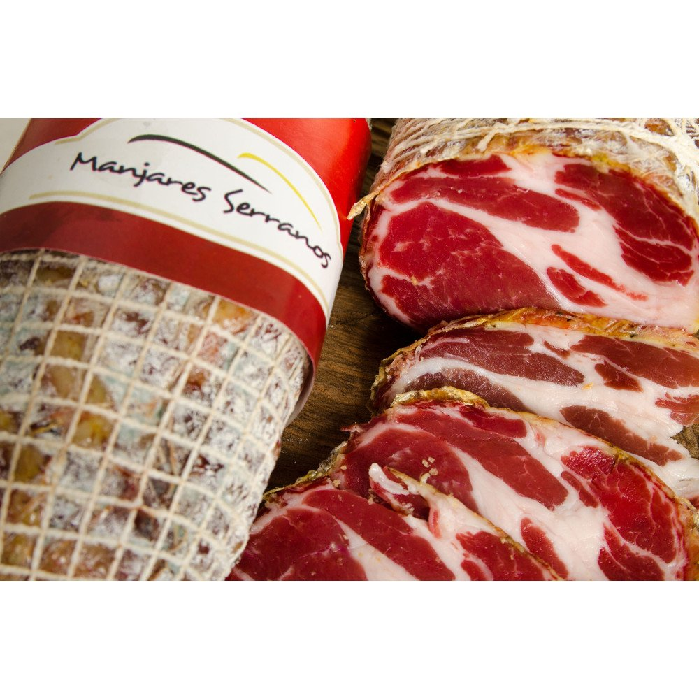
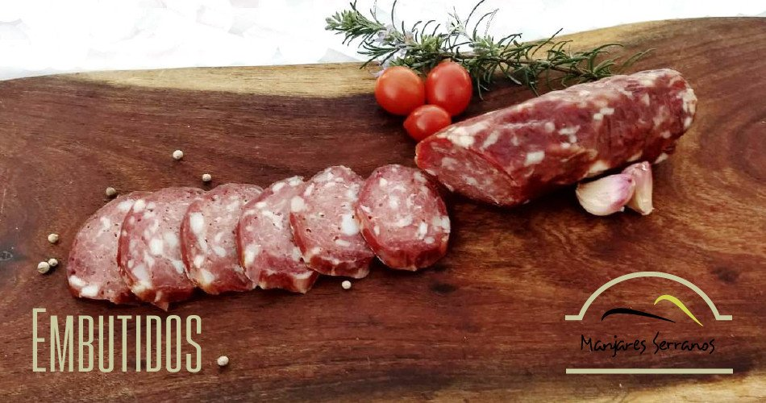
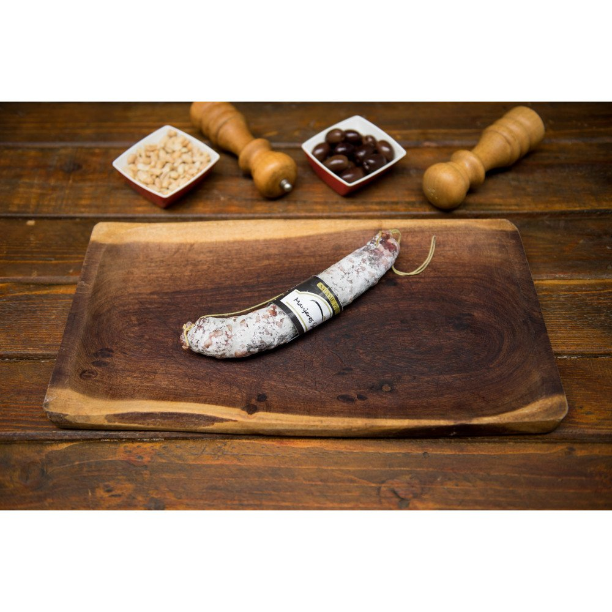
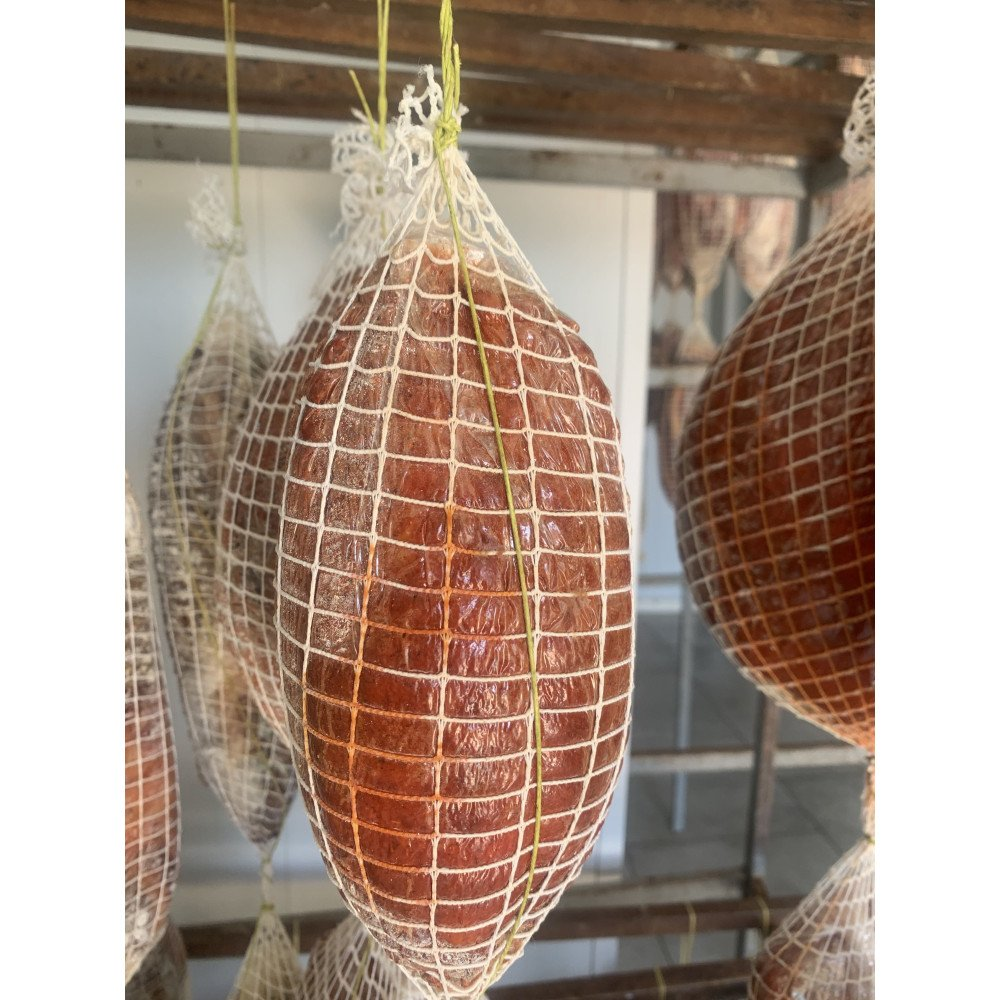

Salazones
BONDIOLA EN RED
Pieza entera de aprox. 1,1 kg. Salada y curada según el método tradicional, con sabor profundo.

Embutidos y salazones elaborados con carne porcina seleccionada y curados lentamente en el aire seco de las Sierras de Córdoba. Un proceso controlado en cada etapa, con trazabilidad completa desde el corte hasta tu mesa.

Pieza entera de aprox. 1,1 kg. Salada y curada según el método tradicional, con sabor profundo.

Tira de 2 unidades de 250 gr c/u. Elaborado con tripa natural para un sabor auténtico.

Pieza entera en red de aprox. 1 kg. El sabor inconfundible del jamón crudo de las sierras.

Manjares Serranos es una empresa familiar de José de la Quintana, Córdoba. Desde hace más de dos décadas elaboramos embutidos y salazones bajo un estándar constante: cada lote debe salir igual de bien que el anterior.
Trabajamos en un establecimiento habilitado bajo registro RNPA 04058778, con controles en cada etapa y trazabilidad completa: toda pieza puede seguirse desde el corte de origen hasta tu mesa.
Trabajamos con carne porcina seleccionada, curada lentamente por el aire seco de la sierra. Comprás directo al productor: retirás en planta o te lo entregamos en Córdoba capital.
Escribinos por WhatsApp y te asesoramos sobre piezas, cantidades y conservación. Coordinamos la entrega en Córdoba capital o el retiro en planta.
Escribir por WhatsApp ⟶